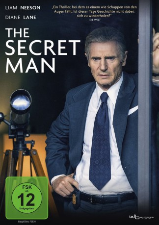

gesehen am 06.03.2018
gesehen am 06.03.2018Alternativ: Mark Felt: The Man Who Brought Down the White House gesehen am 06.03.2018
 
 IMDB-Wertung: 6.4 / 10
IMDB-Wertung: 6.4 / 10  Metascore:
Metascore: 
Im Sommer 1972 werden die USA nicht nur vom Vietnamkrieg erschüttert, sondern auch vom sogenannten "Watergate-Skandal". Der Einbruch in die Zentrale der Demokratischen Partei gibt den Journalisten Rätsel auf - bis Bob Woodward (Julian Morris), Redakteur der Washington Post, von einem mysteriösen Mann kontaktiert wird, der sich "Deep Throat" nennt. Dieser versorgt Woodward mit streng geheimen Informationen und riskiert dafür sein persönliches und berufliches Wohlergehen. Denn hinter "Deep Throat" steckt Mark Felt (Liam Neeson), Vize-Chef des FBI, der die erschrecken Ermittlungsergebnisse aus erster Hand kennt und sich zwischen der Loyalität zu seinem Arbeitgeber und seinem Rechtsverständnis entscheiden muss. Als der neue FBI-Direktor Patrick Gray (Marton Csokas) schließlich versucht, die Watergate-Untersuchungen auffällig schnell zu beenden, entscheidet sich Felt, mit seinem Wissen an die Öffentlichkeit zu gehen...
Jahr: 2017
Dauer: 103 Minuten
FSK: 12
Land: USA Studio: Sony Pictures ClassicsTonspuren: DTS - ,
Untertitel: Deutsch,
Auflösung: 1080p (1920x960) Größe: 4249 MB
Genre: Thriller, Drama, Geschichte, Biographie
Regisseur: Peter Landesman
Drehbuch: Peter Landesman
Soundtrack: Daniel Pemberton
Darsteller:
 Liam Neeson als Mark Felt
Liam Neeson als Mark Felt Diane Lane als Audrey Felt
Diane Lane als Audrey Felt Marton Csokas als L. Patrick Gray
Marton Csokas als L. Patrick Gray Tony Goldwyn als Ed Miller
Tony Goldwyn als Ed Miller Ike Barinholtz als Angelo Lano
Ike Barinholtz als Angelo Lano Josh Lucas als Charlie Bates
Josh Lucas als Charlie Bates Wendi McLendon-Covey als Carol Tschudy
Wendi McLendon-Covey als Carol Tschudy Kate Walsh als Pat Miller
Kate Walsh als Pat Miller Brian d'Arcy James als Robert Kunkel
Brian d'Arcy James als Robert Kunkel Maika Monroe als Joan Felt
Maika Monroe als Joan Felt Michael C. Hall als John Dean
Michael C. Hall als John Dean Tom Sizemore als Bill Sullivan
Tom Sizemore als Bill Sullivan Julian Morris als Bob Woodward
Julian Morris als Bob Woodward Bruce Greenwood als Sandy Smith
Bruce Greenwood als Sandy Smith Noah Wyle als Stan Pottinger
Noah Wyle als Stan Pottinger Eddie Marsan als Agency Man
Eddie Marsan als Agency Man Wayne Pére als John Ehrlichman
Wayne Pére als John Ehrlichman Darryl Cox als Richard Kleindienst
Darryl Cox als Richard Kleindienst Scott Poythress als Gray's Flack
Scott Poythress als Gray's Flack Frank Hoyt Taylor als Senator #1
Frank Hoyt Taylor als Senator #1 Ricky Wayne als Bill Gardner
Ricky Wayne als Bill Gardner L. Warren Young als Juror L.
L. Warren Young als Juror L. Charles Green als Reverend
Charles Green als Reverend Dick Cavett als Himself (archive footage) (uncredited)
Dick Cavett als Himself (archive footage) (uncredited) Walter Cronkite als Himself (archive footage) (uncredited)
Walter Cronkite als Himself (archive footage) (uncredited) Richard Nixon als Himself (archive footage) (uncredited)
Richard Nixon als Himself (archive footage) (uncredited) Donald K. Overstreet als FBI Agent (uncredited)
Donald K. Overstreet als FBI Agent (uncredited)Datei: X:\2017(N-Z)\Secret Man, The (2017, FSK12, 1920x960).mkv seit 28.02.2018
Festplatte: HD 2017(A-Z)-2018(A-F)
 Es gibt insgesamt 170 Filme in der Gruppe '2017(N-Z)'
Es gibt insgesamt 170 Filme in der Gruppe '2017(N-Z)'